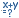
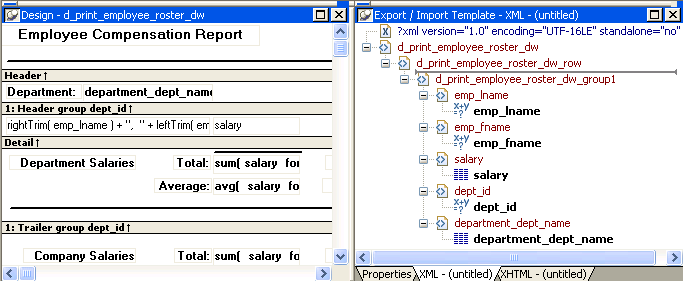
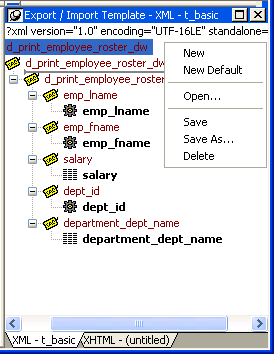
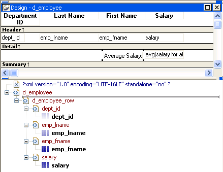

You define and edit templates for export and import in the Export/Import Template view for XML in the DataWindow painter. The view uses a tree view to represent the template.
When you create a new DataWindow object, PowerBuilder displays a default template in the Export/Import Template view. You can edit only one template at a time in the view, but you can create multiple templates and save them with the DataWindow object. Each template is uniquely associated with the DataWindow object open in the painter.
The default template has one element for each column in the DataWindow object.

From the pop-up menu for the Export/Import Template view (with nothing selected), you can create new templates with or without default contents, open an existing template, save the current template, or delete the current template. You can only open and edit templates that are associated with the current DataWindow object.

Each item in the template displays as a single tree view item with an image and font color that denotes its type. Elements are represented by a yellow icon that resembles a luggage tag. The end tags of elements and the markup delimiters used in an XML document do not display.
Table 29-1 shows the icons used in the Export/Import Template view.
To create a template, select the New menu item or the New Default menu item from the pop-up menu in the Export/Import Template view.
The New menu item creates a template that is empty except for the XML declaration, the root element, and the first element of the row data section, referred to as the Detail Start element. The name of the root element is the same as the name of the DataWindow object, and the default name for the Detail Start element is the name of the root element with _row appended.
For example, if the DataWindow object is named d_name, the default template has this structure:
<?xml version="1.0"?>
<d_name>
<d_name_row>
</d_name_row>
</d_name>
The New Default menu item creates a template with the same contents as the New menu item, as well as a flat structure of child elements of the Detail Start element. A child element is created for each DataWindow column name, in the order in which the columns appear in the SELECT statement, with the exception of blob and computed columns. The default tag for the element is the column's name.
If the names of the column and the control are the same, the content of the child element displays with a control reference icon. If there is no control name that matches the column name, the content of the child element displays using the DataWindow expression icon. For example, consider a DataWindow object in which the dept_id column is used as a retrieval argument and does not display:

The SQL syntax is:
SELECT "employee"."dept_id",
"employee"."emp_lname",
"employee"."emp_fname",
"employee"."salary"
FROM "employee"
WHERE employee.dept_id = :deptnum
ORDER BY "employee"."emp_lname" ASC
In the default template, dept_id uses the DataWindow expression icon. All the other columns used the column control reference icon.
To save a new template, select Save from the pop-up menu in the Export/Import Template view, and give the template a name and optionally a comment that identifies its use.

The template is stored inside the DataWindow object in the PBL. After saving a template with a DataWindow object, you can see its definition in the Source editor for the DataWindow object. For example, this is part of the source for a DataWindow that has two templates. The templates have required elements only:
export.xml(usetemplate="t_address"
template=(comment="Employee Phone Book"
name="t_phone" xml="<d_emplist><d_emplist_row
__pbband=~"detail~"/></d_emplist>")
template=(comment="Employee Address Book"
name="t_address" xml="<d_emplist><d_emplist_row
__pbband=~"detail~"/></d_emplist>"))
An XML template has a Header section and a Detail section, separated graphically by a line across the tree view.
The items in the Header section are generated only once when the DataWindow is exported to XML, unless the DataWindow is a group DataWindow. For group DataWindow objects, you can choose to generate the contents of the header section iteratively for each group. For more information, see "Generating group headers".
The Detail section contains the row data, and is generated iteratively for each row in the DataWindow object.

A line across the Export/Import Template view separates the Header section from the Detail section. The first element after this line, d_dept_list_row in the previous screenshot, is called the Detail Start element.
There can be only one Detail Start element, and it must be inside the document's root element. By default, the first child of the root element is the Detail Start element. It usually wraps a whole row, separating columns across rows. When the DataWindow is exported to XML, this element and all children and/or siblings after it are generated iteratively for each row. Any elements in the root element above the separator line are generated only once, unless the DataWindow is a group DataWindow and the Iterate Group Headers check box has been selected.
The Detail Start element can be a nested (or multiply-nested) child of an element from the Header section, permitting a nested detail. This might be useful for DataStores being packaged for submission to external processes, such as B2B, that require company and/or document information, date, or other master data preceding the detail.
You can change the location of the separator line by selecting the element that you want as the Detail Start element and selecting Starts Detail from its pop-up menu. The separator line is redrawn above the new Detail Start element. When you export the data, the Detail Start element and the children and siblings after it are generated iteratively for each row.
If no Detail Start element is specified (that is, if the Starts Detail option has been deselected), the template has only a Header section. When you export the data, only one iteration of row data is generated.
The Header section can contain the items listed in Table 29-2. Only the root element is required:
| Item | Details |
|---|---|
| XML declaration | This must be the first item in the tree view if it exists. See "XML declaration". |
| Document type declaration | If there is an XML declaration, the document type declaration must appear after the XML declaration and any optional processing instructions and comments, and before the root element. Otherwise, this must be the first item in the tree view. See "Document type declaration". |
| Comments | See "Comments". |
| Processing instructions | See "Processing instructions". |
| Root element (start tag) | See "Root element". |
| Group header elements | See "Generating group headers". |
| Child elements | Child elements in the Header section cannot be iterative except in the case of group DataWindows. |
 Detail section in root element The root element displays in the Header section, but the entire
content of the Detail section is contained in the root element.
Detail section in root element The root element displays in the Header section, but the entire
content of the Detail section is contained in the root element.
The Detail section, which holds the row data, can contain the items listed in Table 29-3.
| Item | Details |
|---|---|
| Detail Start element | See "The Detail Start element". |
| Child or sibling elements to the Detail Start element | To add a sibling to the Detail Start element, add a child to its parent (the root element by default). |
| Control references | These references are in text format and can include references to column, text, computed field, and report controls. See "Controls". Nested report controls can only be referenced as child elements. See "Composite and nested reports". |
| DataWindow expressions | See "DataWindow expressions". |
| Literal text | Literal text does not correspond to a control in the DataWindow object. |
| Comments | See "Comments". |
| Processing instructions | See "Processing instructions". |
| CDATA sections | See "CDATA sections". |
| Attributes | You can assign attributes to all element types. See "Attributes". |